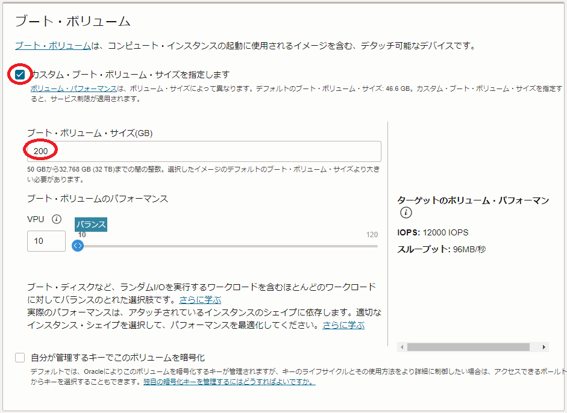

0. 概要
本チュートリアルは、OCIコンソールから必要なリソースを順次OCI上にデプロイしてその上でソフトウェア環境を手動で構築する方法で、 Docker Community Edition と NVIDIA Container Toolkit を使用する分散機械学習に対応するコンテナ実行環境をGPUクラスタ上に構築、複数ノードに跨るGPU間の通信性能を NCCL（NVIDIA Collective Communication Library） の通信性能計測プログラム NCCL Tests で検証後、分散機械学習の稼働確認として TensorFlow の MultiWorkerMirroredStrategy を使用するサンプルプログラムを実行、その性能を検証します。
本チュートリアルで構築するGPUクラスタの構成を以下に示します。
[GPUノード]
- シェイプ ： BM.GPU4.8/BM.GPU.A100-v2.8
- インターコネクト ： クラスタ・ネットワーク
- OS ： Oracle Linux 8.9ベースのGPU クラスタネットワーキングイメージ （※1）
[Bastionノード]
- シェイプ ： VM.Standard.E4.Flex
- OS ： Oracle Linux 8.9
[ソフトウェア]
- コンテナランタイム ： Docker Community Edition 26.1.3
- NVIDIA Container Toolkit ： 1.15.0
[クラスタ管理]
- 共有ストレージ ： BastionノードをNFSサーバとするGPUクラスタ内ホームディレクトリ共有
※1） OCI HPCテクニカルTips集 の クラスタネットワーキングイメージの選び方 の 1. クラスタネットワーキングイメージ一覧 のイメージ No.7 です。

このチュートリアルで作成する環境は、ユーザ管理、ホスト名管理、ファイル共有、プログラム開発環境、コンテナオーケストレーション等、必要なソフトウェア環境をこの上に整備し、ご自身の要件に沿ったGPUクラスタを構築する際の基礎インフラストラクチャとして利用することが可能です。
なお、これらのクラスタ管理に必要なソフトウェアの導入までを自動化する HPCクラスタスタック も利用可能で、詳細は OCI HPCチュートリアル集 のカテゴリ 機械学習環境 のチュートリアルでクラスタ管理機能が有りとなっているチュートリアルを参照ください。
所要時間 : 約2時間
前提条件 : GPUクラスタを収容する コンパートメント ( ルート・コンパートメント でもOKです)の作成と、このコンパートメントに対する必要なリソース管理権限がユーザーに付与されていること。
注意 : 本コンテンツ内の画面ショットは、現在のOCIコンソール画面と異なっている場合があります。
1. GPUクラスタ作成事前作業
1-0. 概要
本章は、GPUノードをTCP接続する 仮想クラウド・ネットワーク と、インターネットから直接アクセス出来ないプライベートサブネットに接続するGPUノードにログインする際の踏み台となるBastionノードを、GPUクラスタ作成前に予め用意します。
1-1. 仮想クラウド・ネットワーク作成
本章は、GPUノードをTCP接続する 仮想クラウド・ネットワーク を作成します。
仮想クラウド・ネットワーク の作成は、 OCIチュートリアル の その2 - クラウドに仮想ネットワーク(VCN)を作る の手順に従い、以下のリソースを作成します。
- 仮想クラウド・ネットワーク （10.0.0.0/16）
- パブリックサブネット（10.0.1.0/24）
- プライベートサブネット（10.0.2.0/24）
- インターネット・ゲートウェイ （パブリックサブネットにアタッチ）
- NATゲートウェイ （プライベートサブネットにアタッチ）
- サービス・ゲートウェイ （プライベートサブネットにアタッチ）
- ルート表 x 2（パブリックサブネットとプライベートサブネットにアタッチ）
- セキュリティリスト x 2（パブリックサブネットとプライベートサブネットにアタッチ）
作成後、 セキュリティリスト が以下となるように修正します。
| サブネット | 通信方向 | ステートレス | ソース | IPプロトコル | ソース・ポート範囲 | 宛先ポート範囲 |
|---|---|---|---|---|---|---|
| パブリック | イングレス | いいえ | 0.0.0.0/0 （※2） |
TCP | All | 22 |
| いいえ | 10.0.0.0/16 | 全てのプロトコル | - | - | ||
| イグレス | いいえ | 0.0.0.0/0 | 全てのプロトコル | - | - | |
| プライベート | イングレス | いいえ | 10.0.0.0/16 | 全てのプロトコル | - | - |
| イグレス | いいえ | 0.0.0.0/0 | 全てのプロトコル | - | - |
※2）この設定により、BastionノードへのSSHアクセスをインターネット上の全てのIPアドレスに許可していますが、これを自身のサイトのIPアドレスに限定することで、不正アクセスを防ぐことが可能です。
1-2. Bastionノード作成
本章は、GPUノードにログインする際の踏み台となるBastinノードを作成し、必要なセットアップ作業を実施します。
Bastionノードの作成は、 OCIチュートリアル の その3 - インスタンスを作成する の手順を参考に、ご自身の要件に沿ったインスタンスを先の手順で 仮想クラウド・ネットワーク を作成した コンパートメント とパブリックサブネットを指定して作成します。
本チュートリアルは、以下属性のインスタンスをBastionノードとして作成します。
- イメージ ： Oracle Linux 8.9
- シェイプ ： VM.Standard.E4.Flex （任意のコア数・メモリ容量）
- SSHキーの追加 ： Bastionノードにログインする際使用するSSH秘密鍵に対応する公開鍵
次に、作成したBastionノードにopcユーザでSSHログインして以下コマンドを実行、SSH鍵ペアを作成してこの公開鍵を authorized_keys に登録します。
このSSH鍵は、BastionノードからGPUノードにログインする際や、GPUノード間のMPIプログラム実行時に使用します。
$ ssh-keygen -t rsa -N "" -f ~/.ssh/id_rsa
$ cat ~/.ssh/id_rsa.pub | tee -a ~/.ssh/authorized_keys
次に、以降作成するGPUノードの名前解決をインスタンス名で行うため、 OCI HPCテクニカルTips集 の 計算/GPUノードの効果的な名前解決方法 の手順を実施します。
次に、以降作成するGPUノードで実施する手順を pdsh を使用して効率よく進めるため、 OCI HPCテクニカルTips集 の pdshで効率的にクラスタ管理オペレーションを実行 の 1. pdshインストール・セットアップ の手順を実施し、 pdsh をインストール・セットアップします。
なおこの手順は、該当する手順を全てのGPUノードで実施する場合、必要ありません。
次に、以下コマンドをopcユーザで実行し、GPUクラスタ内でホームディレクトリをNFS共有するためNFSサーバとして構成します。
$ echo "/home 10.0.0.0/16(rw,sync,no_root_squash)" | sudo tee -a /etc/exports
$ sudo systemctl enable --now nfs-server rpcbind
次に、以下のファイルを新規に作成後
[ /etc/firewalld/zones/trusted.xml ]
<?xml version="1.0" encoding="utf-8"?>
<zone target="ACCEPT">
<short>Trusted</short>
<description>All network connections are accepted.</description>
<source address="10.0.0.0/16"/>
</zone>
opcユーザで以下コマンドを実行し、プライベートサブネットからのNFSアクセスをファイアーウォールに許可します。
$ sudo systemctl restart firewalld
2. GPUクラスタ作成
2-0. 概要
クラスタ・ネットワーク は、作成時に指定する インスタンス構成 とノード数を基に インスタンス・プール がGPUノードをデプロイし、これを クラスタ・ネットワーク に接続します。
またGPUノードのOSレベルのカスタマイズは、 cloud-init を使用して自動化することで、デプロイ後の作業を軽減します。
以上より、GPUクラスタの作成は、以下の手順を経て行います。
- cloud-init 設定ファイル（ cloud-config ）作成
- インスタンス構成 作成
- クラスタ・ネットワーク 作成
2-1. cloud-config作成
本章は、 cloud-init 設定ファイル（ cloud-config ）を作成します。
本チュートリアルは、 cloud-init を以下の目的で使用します。
- タイムゾーンをJSTに変更
- NVMe SSDローカルディスク領域ファイルシステム作成
- firewalld停止
- ルートファイルシステム拡張
- パブリックサブネットのドメイン名を search 行に追加
- BastionノードのホームディレクトリをNFSマウント
以下は、本チュートリアルで使用する cloud-config で、OCIコンソールを実行している端末上にテキストファイルで保存します。
#cloud-config
#
# Change time zone to JST
timezone: Asia/Tokyo
runcmd:
#
# NVMe local storage setting
- vgcreate nvme /dev/nvme0n1 /dev/nvme1n1 /dev/nvme2n1 /dev/nvme3n1
- lvcreate -l 100%FREE nvme
- mkfs.xfs -L localscratch /dev/nvme/lvol0
- mkdir -p /mnt/localdisk
- echo "LABEL=localscratch /mnt/localdisk/ xfs defaults,noatime 0 0" >> /etc/fstab
- mount /mnt/localdisk
#
# Stop firewalld
- systemctl disable --now firewalld
#
# Expand root file system to those set by instance configuration
- /usr/libexec/oci-growfs -y
#
# Add public subnet to DNS search
- sed -i '/^search/s/$/ public.vcn.oraclevcn.com/g' /etc/resolv.conf
- chattr -R +i /etc/resolv.conf
#
# NFS mount setting
- echo "bastion:/home /home nfs defaults,vers=3 0 0" >> /etc/fstab
- mount /home
2-2. インスタンス構成作成
本章は、 インスタンス構成 を作成します。
-
OCIコンソールにログインし、GPUクラスタをデプロイするリージョンを選択後、 コンピュート → インスタンス構成 とメニューを辿ります。
-
表示される以下画面で、インスタンス構成の作成 ボタンをクリックします。

-
表示される インスタンス構成の作成 画面で、以下の情報を入力し 作成 ボタンをクリックします。なお、ここに記載のないフィールドは、デフォルトのままとします。
3.1 インスタンス構成情報 フィールド
- 名前 ：インスタンス構成に付与する名前
- コンパートメントに作成 ：インスタンス構成を作成するコンパートメント

3.2 インスタンスの作成先のコンパートメント フィールド：インスタンスをデプロイするコンパートメント

3.3 配置 フィールド
- 可用性ドメイン ：インスタンスをデプロイする可用性ドメイン

3.4 イメージとシェイプ フィールド

-
イメージ ：Oracle Linux - GPU Cluster Networking Image (イメージの変更 ボタンをクリックして表示される以下 イメージの選択 サイドバーで Marketplace アイコンを選択し検索フィールドに gpu と入力して表示される Oracle Linux - GPU Cluster Networking Image を選択し イメージ・ビルド フィールドで OracleLinux-8-OCA-RHCK-OFED-23.10-2.1.3.1-GPU-550-CUDA-12.4-2024.05.08-0 を選択し イメージの選択 ボタンをクリック）
-
Shape ：BM.GPU4.8/BM.GPU.A100-v2.8 （ Change Shape ボタンをクリックして表示される以下 すべてのシェイプの参照 サイドバーで ベア・メタル・マシン をクリックして表示される BM.GPU4.8/BM.GPU.A100-v2.8 を選択し 次のドキュメントを確認した上でこれに同意します チェックボックスをチェックし シェイプの選択 ボタンをクリック）
3.5 ネットワーキング フィールド
- プライマリ・ネットワーク ： 先に作成したVCNを選択
- サブネット ：先に作成したプライベートサブネットを選択

3.6 SSHキーの追加 フィールド
- SSHキー ：先にBastionノードで作成したSSH鍵の公開鍵（ 以下 公開キーの貼付け ラジオボタンを選択することで入力フィールドを表示）

3.7 ブート・ボリューム フィールド
- ブート・ボリューム・サイズ(GB) ： 200（※2）
- カスタム・ブート・ボリューム・サイズを指定します チェックボックスをチェックすると指定可能

※2）通常GPUノードは、様々な機械学習用ソフトウェアやコンテナイメージを格納する必要があるため、少なくとも200 GBの ブート・ボリューム サイズとします。
3.8 管理 フィールド（以下 拡張オプションの表示 ボタンを選択して表示）

- cloud-initスクリプト ：先に作成した cloud-init 設定ファイル（ cloud-config ）を選択（ 参照 ボタンでファイルを選択）

3.9 Oracle Cloudエージェント フィールド（以下 Oracle Cloudエージェント タブを選択して表示）
- Compute HPC RDMA Auto-Configuration ：チェック
- Compute HPC RDMA Authentication ：チェック
2-3. クラスタ・ネットワーク作成
本章は、 クラスタ・ネットワーク を作成します。
-
OCIコンソールにログインし、GPUクラスタをデプロイするリージョンを選択後、 コンピュート → クラスタ・ネットワーク とメニューを辿ります。
-
表示される以下画面で、クラスタ・ネットワークの作成 ボタンをクリックします。
-
表示される クラスタ・ネットワークの作成 画面で、以下の情報を入力し クラスタ・ネットワークの作成 ボタンをクリックします。なお、ここに記載のないフィールドは、デフォルトのままとします。
3.1 名前 フィールド：クラスタ・ネットワークに付与する名前

3.2 コンパートメントに作成 フィールド：クラスタ・ネットワークをデプロイするコンパートメント

3.2 可用性ドメイン フィールド：クラスタ・ネットワークをデプロイする可用性ドメイン

3.3 ネットワーキングの構成 フィールド
- 仮想クラウド・ネットワーク ：先に作成したVCNを選択
- サブネット ：先に作成したプライベートサブネットを選択

3.4 インスタンス・プールの構成 フィールド
- インスタンス・プール名 ：作成される インスタンス・プール に付与する名前
- インスタンス数 ：2（デプロイするGPUノードのノード数）
- インスタンス構成 ：先に作成した インスタンス構成
-
表示される以下 クラスタ・ネットワーク作業リクエスト 画面で、左上のステータスが プロビジョニング中 と表示されれば、クラスタ・ネットワークとGPUノードの作成が実施されています。
ステータスが 実行中 となれば、 クラスタ・ネットワーク とGPUノードの作成が完了しています。
3. GPUノード確認
3.0. 概要
本章は、デプロイされたGPUノードにログインし、環境を確認します。
3.1. GPUノードログイン
GPUノードは、プライベートサブネットに接続されており、インターネットからログインすることが出来ないため、Bastionノードを経由してSSHログインします。
BastionノードからGPUノードへのログインは、GPUノードのインスタンス名を使用します。
GPUノードのインスタンス名は、OCIコンソールでGPUノードをデプロイしたリージョンを選択後、 コンピュート → インスタンス とメニューを辿り、以下のインスタンス一覧からそのインスタンス名を確認します。
またこの画面は、GPUノードのIPアドレスも表示しており、これを使用してBastionノードからSSHログインすることも可能です。

GPUノードへのログインは、以下のようにBastionノードからopcユーザでSSHログインします。
$ ssh -oStrictHostKeyChecking=accept-new inst-xxxxx-gpu4-ol89
3.2. cloud-init完了確認
cloud-init は、GPUノードが起動してSSHログインできる状態であっても、その処理が継続している可能性があるため、以下コマンドでそのステータスを表示し、 done となっていることで cloud-init の処理完了を確認します。
ステータスが running の場合は、 cloud-init の処理が継続中のため、処理が完了するまで待ちます。
$ pdsh -g all 'sudo cloud-init status' | dshbak -c
----------------
inst-xxxxx-gpu4-ol89,inst-yyyyy-gpu4-ol89
----------------
status: done
$
3-3. タイムゾーン確認
以下コマンドをBastionノードのopcユーザで実行し、タイムゾーンがJSTになっていることを確認します。
$ pdsh -g all 'date' | dshbak -c
----------------
inst-xxxxx-gpu4-ol89,inst-yyyyy-gpu4-ol89
----------------
Mon Jan 29 12:08:00 JST 2024
$
3-4. ファイルシステム確認
以下コマンドをBastionノードのopcユーザで実行し、ルートファイルシステムが指定のサイズとなっていること、Bastionノードの /home がNFSで /home にマウントされていること、及びNVMe SSDローカルディスクが /mnt/localdisk にマウントされていることを確認します。
$ pdsh -g all 'sudo df -h / /home /mnt/localdisk' | dshbak -c
----------------
inst-xxxxx-gpu4-ol89,inst-yyyyy-gpu4-ol89
----------------
Filesystem Size Used Avail Use% Mounted on
/dev/mapper/ocivolume-root 189G 39G 151G 21% /
bastion:/home 36G 11G 25G 31% /home
/dev/mapper/nvme-lvol0 25T 177G 25T 1% /mnt/localdisk
$
3-5. ファイアーウォール停止確認
以下コマンドをBastionノードのopcユーザで実行し、ファイアーウォールが停止されていることを確認します。
$ pdsh -g all 'sudo systemctl status firewalld | grep -e Active -e disabled' | dshbak -c
----------------
inst-xxxxx-gpu4-ol89,inst-yyyyy-gpu4-ol89
----------------
Loaded: loaded (/usr/lib/systemd/system/firewalld.service; disabled; vendor preset: enabled)
Active: inactive (dead)
$
3-6. クラスタ・ネットワーク接続用ネットワークインターフェース確認
以下コマンドをBastionノードのopcユーザで実行し、 クラスタ・ネットワーク 接続用の16個のネットワークインターフェース（rdmax）にTCP/IP接続用のネットワークインターフェース（eth0）と4フィールド目が同じ10.224.[0 - 15].x/12のIPアドレスが設定されていることを確認します。
なお、このIPアドレス設定が完了するまで、GPUノードにログイン可能となってから10分程度を要します。
$ pdsh -g all 'ip a | grep -e eth0 -e rdma | grep inet' | dshbak -c
----------------
inst-xxxxx-gpu4-ol89
----------------
inet 10.0.2.117/24 brd 10.0.2.255 scope global dynamic eth0
inet 10.224.0.117/12 brd 10.239.255.255 scope global noprefixroute rdma0
inet 10.224.1.117/12 brd 10.239.255.255 scope global noprefixroute rdma1
inet 10.224.2.117/12 brd 10.239.255.255 scope global noprefixroute rdma2
inet 10.224.3.117/12 brd 10.239.255.255 scope global noprefixroute rdma3
inet 10.224.4.117/12 brd 10.239.255.255 scope global noprefixroute rdma4
inet 10.224.5.117/12 brd 10.239.255.255 scope global noprefixroute rdma5
inet 10.224.6.117/12 brd 10.239.255.255 scope global noprefixroute rdma6
inet 10.224.7.117/12 brd 10.239.255.255 scope global noprefixroute rdma7
inet 10.224.8.117/12 brd 10.239.255.255 scope global noprefixroute rdma8
inet 10.224.9.117/12 brd 10.239.255.255 scope global noprefixroute rdma9
inet 10.224.10.117/12 brd 10.239.255.255 scope global noprefixroute rdma10
inet 10.224.11.117/12 brd 10.239.255.255 scope global noprefixroute rdma11
inet 10.224.12.117/12 brd 10.239.255.255 scope global noprefixroute rdma12
inet 10.224.13.117/12 brd 10.239.255.255 scope global noprefixroute rdma13
inet 10.224.14.117/12 brd 10.239.255.255 scope global noprefixroute rdma14
inet 10.224.15.117/12 brd 10.239.255.255 scope global noprefixroute rdma15
----------------
inst-yyyyy-gpu4-ol89
----------------
inet 10.0.2.17/24 brd 10.0.2.255 scope global dynamic eth0
inet 10.224.0.17/12 brd 10.239.255.255 scope global noprefixroute rdma0
inet 10.224.1.17/12 brd 10.239.255.255 scope global noprefixroute rdma1
inet 10.224.2.17/12 brd 10.239.255.255 scope global noprefixroute rdma2
inet 10.224.3.17/12 brd 10.239.255.255 scope global noprefixroute rdma3
inet 10.224.4.17/12 brd 10.239.255.255 scope global noprefixroute rdma4
inet 10.224.5.17/12 brd 10.239.255.255 scope global noprefixroute rdma5
inet 10.224.6.17/12 brd 10.239.255.255 scope global noprefixroute rdma6
inet 10.224.7.17/12 brd 10.239.255.255 scope global noprefixroute rdma7
inet 10.224.8.17/12 brd 10.239.255.255 scope global noprefixroute rdma8
inet 10.224.9.17/12 brd 10.239.255.255 scope global noprefixroute rdma9
inet 10.224.10.17/12 brd 10.239.255.255 scope global noprefixroute rdma10
inet 10.224.11.17/12 brd 10.239.255.255 scope global noprefixroute rdma11
inet 10.224.12.17/12 brd 10.239.255.255 scope global noprefixroute rdma12
inet 10.224.13.17/12 brd 10.239.255.255 scope global noprefixroute rdma13
inet 10.224.14.17/12 brd 10.239.255.255 scope global noprefixroute rdma14
inet 10.224.15.17/12 brd 10.239.255.255 scope global noprefixroute rdma15
$
なお、後に実行する NCCL Tests の起動コマンドで設定している NCCL_IB_HCA 環境変数に指定のRDMAリンク名（ mlx5_xx ）は、以下のように先の クラスタ・ネットワーク 接続用のネットワークインターフェースに対応しています。
$ pdsh -g all 'rdma link show | grep rdma' | dshbak -c
----------------
inst-xxxxx-gpu4-ol89,inst-yyyyy-gpu4-ol89
----------------
link mlx5_6/1 state ACTIVE physical_state LINK_UP netdev rdma0
link mlx5_7/1 state ACTIVE physical_state LINK_UP netdev rdma1
link mlx5_8/1 state ACTIVE physical_state LINK_UP netdev rdma2
link mlx5_9/1 state ACTIVE physical_state LINK_UP netdev rdma3
link mlx5_0/1 state ACTIVE physical_state LINK_UP netdev rdma4
link mlx5_1/1 state ACTIVE physical_state LINK_UP netdev rdma5
link mlx5_2/1 state ACTIVE physical_state LINK_UP netdev rdma6
link mlx5_3/1 state ACTIVE physical_state LINK_UP netdev rdma7
link mlx5_14/1 state ACTIVE physical_state LINK_UP netdev rdma8
link mlx5_15/1 state ACTIVE physical_state LINK_UP netdev rdma9
link mlx5_16/1 state ACTIVE physical_state LINK_UP netdev rdma10
link mlx5_17/1 state ACTIVE physical_state LINK_UP netdev rdma11
link mlx5_10/1 state ACTIVE physical_state LINK_UP netdev rdma12
link mlx5_11/1 state ACTIVE physical_state LINK_UP netdev rdma13
link mlx5_12/1 state ACTIVE physical_state LINK_UP netdev rdma14
link mlx5_13/1 state ACTIVE physical_state LINK_UP netdev rdma15
4. コンテナ環境構築
本章は、 Docker Community Edition と NVIDIA Container Toolkit を使用し、GPU利用可能なコンテナ環境を構築します。
以下コマンドをBastionノードのopcユーザで実行し、 Docker Community Edition と NVIDIA Container Toolkit を全てのGPUノードにインストールしこれを起動します。
$ pdsh -g all 'sudo yum-config-manager --add-repo https://download.docker.com/linux/centos/docker-ce.repo' | dshbak -c
----------------
inst-xxxxx-gpu4-ol89,inst-yyyyy-gpu4-ol89
----------------
Adding repo from: https://download.docker.com/linux/centos/docker-ce.repo
$ pdsh -g all 'sudo dnf install -y docker-ce nvidia-container-toolkit > /dev/null 2>&1; echo $?' | dshbak -c
----------------
inst-xxxxx-gpu4-ol89,inst-yyyyy-gpu4-ol89
----------------
0
$ pdsh -g all 'sudo systemctl enable --now docker 2> /dev/null' | dshbak -c
$
次に、以下コマンドを全てのGPUノードのopcユーザで実行し、コンテナ上で BM.GPU4.8 が搭載する8個のGPUにアクセスできることを確認します。
$ sudo docker run --rm --gpus all nvcr.io/nvidia/base/ubuntu:22.04_20240212 nvidia-smi
Unable to find image 'nvcr.io/nvidia/base/ubuntu:22.04_20240212' locally
22.04_20240212: Pulling from nvidia/base/ubuntu
d66d6a6a3687: Pull complete
24c2d4f7ea40: Pull complete
9d30336abbd7: Pull complete
feb1277c15aa: Pull complete
3cf0dbeda93a: Pull complete
99fc1e9ef206: Pull complete
a8f7f8dfd4e2: Pull complete
Digest: sha256:2a9f71d82aa4daac444c1b4b74d5d7b01f93eb23662c1236f89d817f083abecd
Status: Downloaded newer image for nvcr.io/nvidia/base/ubuntu:22.04_20240212
Mon Jul 1 02:58:34 2024
+-----------------------------------------------------------------------------------------+
| NVIDIA-SMI 550.54.15 Driver Version: 550.54.15 CUDA Version: 12.4 |
|-----------------------------------------+------------------------+----------------------+
| GPU Name Persistence-M | Bus-Id Disp.A | Volatile Uncorr. ECC |
| Fan Temp Perf Pwr:Usage/Cap | Memory-Usage | GPU-Util Compute M. |
| | | MIG M. |
|=========================================+========================+======================|
| 0 NVIDIA A100-SXM4-40GB On | 00000000:0F:00.0 Off | 0 |
| N/A 38C P0 81W / 400W | 0MiB / 40960MiB | 0% Default |
| | | Disabled |
+-----------------------------------------+------------------------+----------------------+
| 1 NVIDIA A100-SXM4-40GB On | 00000000:15:00.0 Off | 0 |
| N/A 37C P0 85W / 400W | 0MiB / 40960MiB | 0% Default |
| | | Disabled |
+-----------------------------------------+------------------------+----------------------+
| 2 NVIDIA A100-SXM4-40GB On | 00000000:51:00.0 Off | 0 |
| N/A 34C P0 81W / 400W | 0MiB / 40960MiB | 0% Default |
| | | Disabled |
+-----------------------------------------+------------------------+----------------------+
| 3 NVIDIA A100-SXM4-40GB On | 00000000:54:00.0 Off | 0 |
| N/A 36C P0 82W / 400W | 0MiB / 40960MiB | 0% Default |
| | | Disabled |
+-----------------------------------------+------------------------+----------------------+
| 4 NVIDIA A100-SXM4-40GB On | 00000000:8D:00.0 Off | 0 |
| N/A 35C P0 79W / 400W | 0MiB / 40960MiB | 0% Default |
| | | Disabled |
+-----------------------------------------+------------------------+----------------------+
| 5 NVIDIA A100-SXM4-40GB On | 00000000:92:00.0 Off | 0 |
| N/A 35C P0 81W / 400W | 0MiB / 40960MiB | 0% Default |
| | | Disabled |
+-----------------------------------------+------------------------+----------------------+
| 6 NVIDIA A100-SXM4-40GB On | 00000000:D6:00.0 Off | 0 |
| N/A 34C P0 78W / 400W | 0MiB / 40960MiB | 0% Default |
| | | Disabled |
+-----------------------------------------+------------------------+----------------------+
| 7 NVIDIA A100-SXM4-40GB On | 00000000:DA:00.0 Off | 0 |
| N/A 36C P0 85W / 400W | 0MiB / 40960MiB | 0% Default |
| | | Disabled |
+-----------------------------------------+------------------------+----------------------+
+-----------------------------------------------------------------------------------------+
| Processes: |
| GPU GI CI PID Type Process name GPU Memory |
| ID ID Usage |
|=========================================================================================|
| No running processes found |
+-----------------------------------------------------------------------------------------+
$
5. NCCL Tests実行
本章は、 NGC Catalog から提供される TensorFlow NGC Container を起動し、このコンテナに含まれる NCCL とコンテナ上でビルドする NCCL Tests を使用し、Dockerコンテナ上で NCCL のGPU間通信性能を NCCL Tests で検証します。
この NCCL Tests 実行方法は、 標準ベンチマーク実行方法 の NCCL Tests実行方法 を参照してください。
6. MultiWorkerMirroredStrategyサンプルプログラム実行
本章は、 MultiWorkerMirroredStrategy サンプルプログラムを使用し、構築したGPUクラスタで分散機械学習プログラムを実行します。
ここで使用する MultiWorkerMirroredStrategy サンプルプログラムは、以下 TensorFlow 公式ドキュメントページのチュートリアルで使用されている、MNISTデータセットを使用した訓練を行うプログラムです。
https://www.tensorflow.org/tutorials/distribute/multi_worker_with_keras
マスターノードとスレーブノードで起動した双方のコンテナ上のrootユーザで、以下のプログラムを作成します。
$ cd /root
$ cat mnist.py
import os
import json
import tensorflow as tf
import numpy as np
def mnist_dataset(batch_size):
(x_train, y_train), _ = tf.keras.datasets.mnist.load_data()
x_train = x_train / np.float32(255)
y_train = y_train.astype(np.int64)
train_dataset = tf.data.Dataset.from_tensor_slices(
(x_train, y_train)).shuffle(60000).repeat().batch(batch_size)
return train_dataset
def build_and_compile_cnn_model():
model = tf.keras.Sequential([
tf.keras.layers.InputLayer(input_shape=(28, 28)),
tf.keras.layers.Reshape(target_shape=(28, 28, 1)),
tf.keras.layers.Conv2D(32, 3, activation='relu'),
tf.keras.layers.Flatten(),
tf.keras.layers.Dense(128, activation='relu'),
tf.keras.layers.Dense(10)
])
model.compile(
loss=tf.keras.losses.SparseCategoricalCrossentropy(from_logits=True),
optimizer=tf.keras.optimizers.SGD(learning_rate=0.001),
metrics=['accuracy'])
return model
per_worker_batch_size = 64
tf_config = json.loads(os.environ['TF_CONFIG'])
num_workers = len(tf_config['cluster']['worker'])
strategy = tf.distribute.MultiWorkerMirroredStrategy()
global_batch_size = per_worker_batch_size * num_workers
multi_worker_dataset = mnist_dataset(global_batch_size)
with strategy.scope():
multi_worker_model = build_and_compile_cnn_model()
multi_worker_model.fit(multi_worker_dataset, epochs=3, steps_per_epoch=70)
次に、マスターノードで起動したコンテナ上のrootユーザで以下コマンドを実行し、環境変数 TF_CONFIG を設定・確認します。
ここで、 worker セクションに指定するマスターノード（inst-xxxxx-gpu4-ol89）とスレーブノード（inst-yyyyy-gpu4-ol89）のホスト名は、自身の環境に合わせて修正します。
$ export TF_CONFIG="{\"cluster\": {\"worker\": [\"inst-xxxxx-gpu4-ol89:12345\", \"inst-yyyyy-gpu4-ol89:23456\"]}, \"task\": {\"type\": \"worker\", \"index\": 0}}"
$ echo $TF_CONFIG
{"cluster": {"worker": ["inst-xxxxx-gpu4-ol89:12345", "inst-yyyyy-gpu4-ol89:23456"]}, "task": {"type": "worker", "index": 0}}
$
次に、マスターノードで起動したコンテナ上のrootユーザで以下コマンドを実行します。
この時点では、スレーブノードの実行を待っている状態で、以下の出力で停止します。
$ python mnist.py
:
2022-12-15 08:48:49.404772: I tensorflow/core/distributed_runtime/coordination/coordination_service_agent.cc:281] Coordination agent has successfully connected.
次に、スレーブノードで起動したコンテナ上のrootユーザで以下コマンドを実行し、環境変数 TF_CONFIG を設定・確認します。
$ export TF_CONFIG="{\"cluster\": {\"worker\": [\"inst-xxxxx-gpu4-ol89:12345\", \"inst-yyyyy-gpu4-ol89:23456\"]}, \"task\": {\"type\": \"worker\", \"index\": 1}}"
$ echo $TF_CONFIG
{"cluster": {"worker": ["inst-xxxxx-gpu4-ol89:12345", "inst-yyyyy-gpu4-ol89:23456"]}, "task": {"type": "worker", "index": 1}}
$
次に、スレーブノードで起動したコンテナ上のrootユーザで以下のコマンドを実行します。
これにより、待機していたマスターノードのワーカーとスレーブノードのワーカーが全16枚のGPUを使用してプログラムを実行します。
＄ python mnist.py
2022-12-19 09:38:23.383751: I tensorflow/core/platform/cpu_feature_guard.cc:194] This TensorFlow binary is optimized with oneAPI Deep Neural Network Library (oneDNN) to use the following CPU instructions in performance-critical operations: SSE3 SSE4.1 SSE4.2 AVX
To enable them in other operations, rebuild TensorFlow with the appropriate compiler flags.
2022-12-19 09:38:26.455413: I tensorflow/core/platform/cpu_feature_guard.cc:194] This TensorFlow binary is optimized with oneAPI Deep Neural Network Library (oneDNN) to use the following CPU instructions in performance-critical operations: SSE3 SSE4.1 SSE4.2 AVX
To enable them in other operations, rebuild TensorFlow with the appropriate compiler flags.
2022-12-19 09:38:27.647393: I tensorflow/core/common_runtime/gpu/gpu_device.cc:1637] Created device /job:localhost/replica:0/task:0/device:GPU:0 with 38139 MB memory: -> device: 0, name: NVIDIA A100-SXM4-40GB, pci bus id: 0000:0f:00.0, compute capability: 8.0
2022-12-19 09:38:27.649632: I tensorflow/core/common_runtime/gpu/gpu_device.cc:1637] Created device /job:localhost/replica:0/task:0/device:GPU:1 with 38139 MB memory: -> device: 1, name: NVIDIA A100-SXM4-40GB, pci bus id: 0000:15:00.0, compute capability: 8.0
2022-12-19 09:38:27.651996: I tensorflow/core/common_runtime/gpu/gpu_device.cc:1637] Created device /job:localhost/replica:0/task:0/device:GPU:2 with 38139 MB memory: -> device: 2, name: NVIDIA A100-SXM4-40GB, pci bus id: 0000:51:00.0, compute capability: 8.0
2022-12-19 09:38:27.654473: I tensorflow/core/common_runtime/gpu/gpu_device.cc:1637] Created device /job:localhost/replica:0/task:0/device:GPU:3 with 38139 MB memory: -> device: 3, name: NVIDIA A100-SXM4-40GB, pci bus id: 0000:54:00.0, compute capability: 8.0
2022-12-19 09:38:27.656586: I tensorflow/core/common_runtime/gpu/gpu_device.cc:1637] Created device /job:localhost/replica:0/task:0/device:GPU:4 with 38139 MB memory: -> device: 4, name: NVIDIA A100-SXM4-40GB, pci bus id: 0000:8d:00.0, compute capability: 8.0
2022-12-19 09:38:27.658573: I tensorflow/core/common_runtime/gpu/gpu_device.cc:1637] Created device /job:localhost/replica:0/task:0/device:GPU:5 with 38139 MB memory: -> device: 5, name: NVIDIA A100-SXM4-40GB, pci bus id: 0000:92:00.0, compute capability: 8.0
2022-12-19 09:38:27.660481: I tensorflow/core/common_runtime/gpu/gpu_device.cc:1637] Created device /job:localhost/replica:0/task:0/device:GPU:6 with 38139 MB memory: -> device: 6, name: NVIDIA A100-SXM4-40GB, pci bus id: 0000:d6:00.0, compute capability: 8.0
2022-12-19 09:38:27.662428: I tensorflow/core/common_runtime/gpu/gpu_device.cc:1637] Created device /job:localhost/replica:0/task:0/device:GPU:7 with 38139 MB memory: -> device: 7, name: NVIDIA A100-SXM4-40GB, pci bus id: 0000:da:00.0, compute capability: 8.0
:
Epoch 1/3
:
70/70 [==============================] - 7s 30ms/step - loss: 2.2694 - accuracy: 0.1422
Epoch 2/3
70/70 [==============================] - 2s 29ms/step - loss: 2.2036 - accuracy: 0.3489
Epoch 3/3
70/70 [==============================] - 2s 28ms/step - loss: 2.1268 - accuracy: 0.5488
7. GPUクラスタの削除
本章は、 クラスタ・ネットワーク を終了することで、作成した クラスタ・ネットワーク とGPUノードを削除します。
-
OCIコンソールメニューから コンピュート → クラスタ・ネットワーク を選択し、表示される以下画面で作成した クラスタ・ネットワーク の 終了 メニューをクリックします。

クラスタ・ネットワーク の 状態 が 終了済 となれば、削除が完了しています。
以上で、本チュートリアルは終了です。